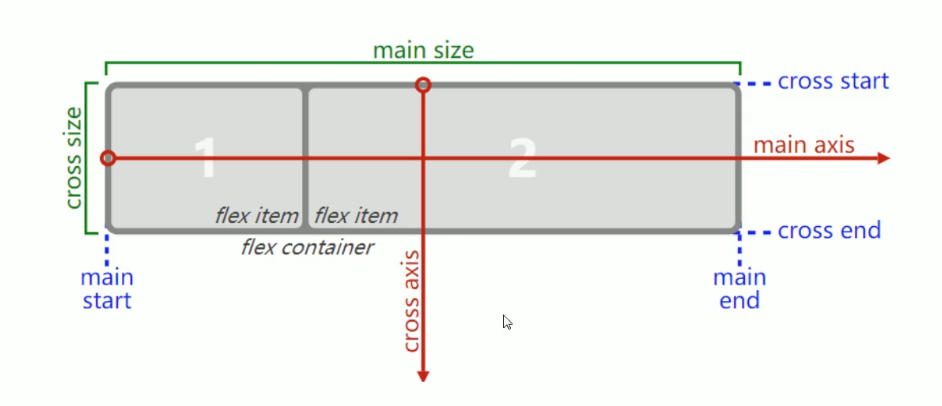
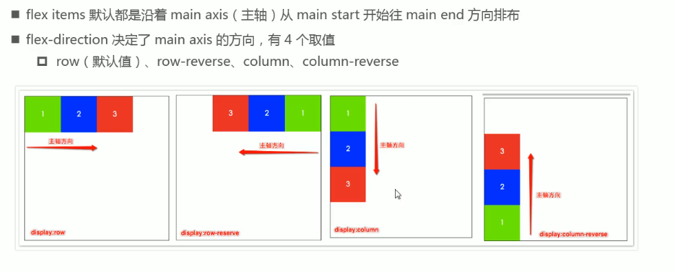
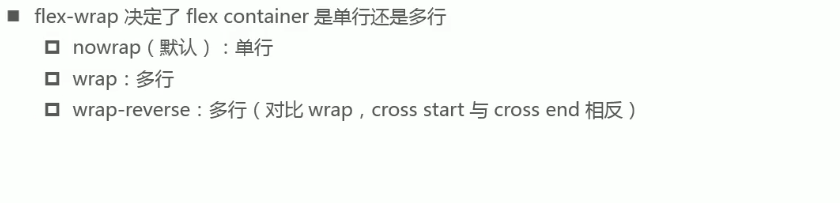
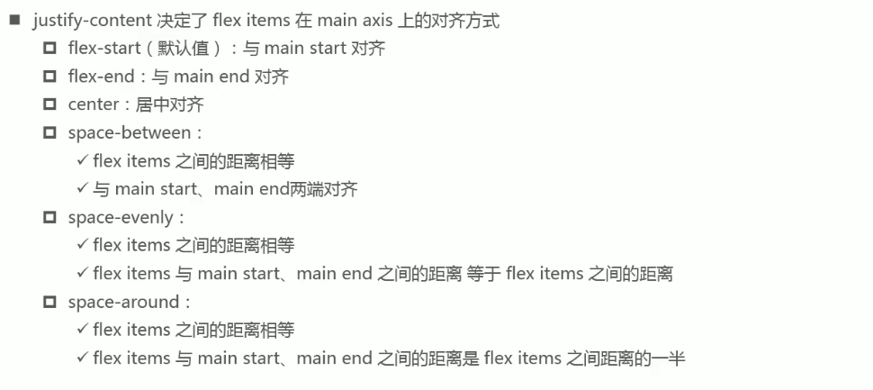
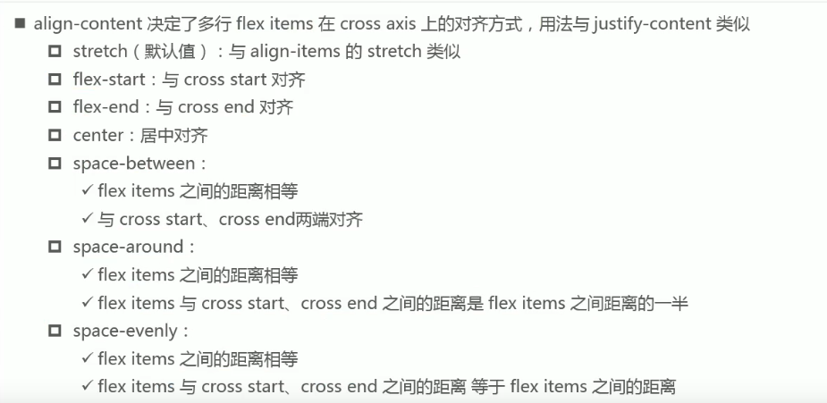
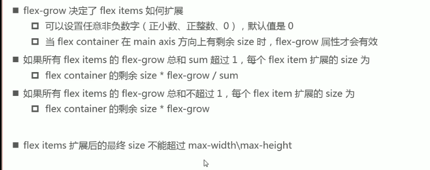
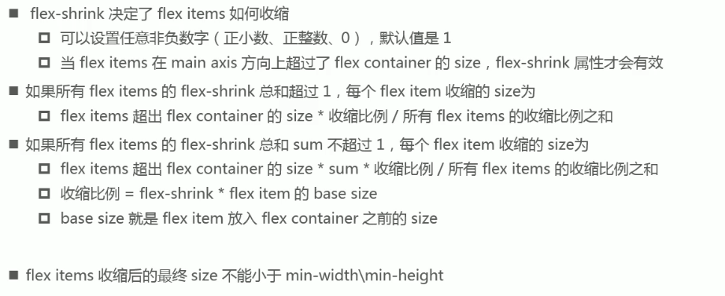
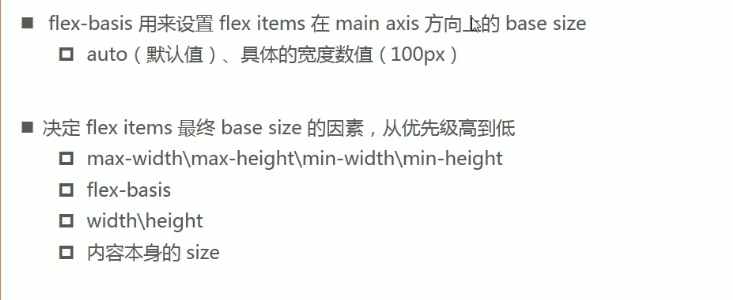

Flex 是 Flexible Box 的缩写，意为"弹性盒子"，用来为盒状模型提供更大更灵活的布局方案，也是目前越来越流行的方案，ie9及以下不支持。
任何一个元素都可以指定为 Flex 布局，因为它本质也是 display的一个属性值。
display:flex;(块级别的)/inline-flex = 开启元素的flex布局。
注意：
1.设为 Flex 布局元素的子元素的float、clear和vertical-align属性将失效。
2.设置Flex 布局的元素，称为 Flex 容器（flex container），简称"容器"。
它的所有直接子元素(儿子)自动成为容器成员，称为 Flex 项目（flex items），简称"项目"。
容器默认存在两根轴：水平方向的主轴（main axis）和垂直方向的交叉轴（cross axis）。
主轴的开始位置（与边框的交叉点）叫做main start，结束位置叫做main end；
交叉轴的开始位置叫做cross start，结束位置叫做cross end。
项目默认沿主轴从main start 往main end方向排列。单个项目占据的主轴空间叫做main size，占据的交叉轴空间叫做cross size。

1. flex-direction: 决定主轴（main axis）的方向。
row 表示主轴方向从左往右(默认)
row-reverse 主轴方向从右往左
column 主轴方向从上往下
column-reverse 主轴方向从下往上。
而项目默认是沿主轴从main start 往main end方向排列的，所以这个也就是设置子项目在开启了flex布局元里的排列方向。

2. flex-wrap: 决定flex元素是单行还是多行显示。在flex布局中默认项目是不换行都一条线上显示的，当项目的宽度大于flex元素的宽度时会压缩项目的宽度，这时就需要换行。
nowrap，(默认不换行)
wrap 父元素宽度不够时换行
wrap-reverse;换行，

3. flex-flow: 它是上面两个的缩写形式，值没有顺序要求，可以省略。 flex-direction || flex-wrap; 默认值为row nowrap。
4. justify-content: 决定项目在主轴上的对齐方式(主轴以flex-direction的值为准)。
flex-start(左对齐即与main start对齐默认值)
flex-end(右对齐即与main end对齐)
center(居中对齐)
space-between(两端对齐，项目之间的间隔都相等。两端项目紧贴main start和main end )
space-around(每个项目之间的间隔相等，两端项目到main start和main end的距离是项目之间距离的一半)
space-evently(每个项目之间的间隔相等，两端项目到main start和main end的距离和项目之间距离的一样)

5. align-items: 决定项目在交叉轴上的对齐方式。
flex-start，(交叉轴的cross start起点对齐)
flex-end，(交叉轴的cross end终点对齐)
center ，中点对齐
baseline ，与项目的第一行文字的基线对齐
stretch，如果项目未设置高度或设为auto，将占满整个flex元素的高度。
6. align-content: 决定多行项目在交叉轴上的对齐方式，用法和justify-content类似。注意如果不是多行没必要设置。
stretch，与align-items的 stretch类似是默认值。
flex-start(左对齐即与cross start对齐默认值)
flex-end(右对齐即与cross end对齐)
center(居中对齐)
space-between(两端对齐，项目之间的间隔都相等。两端项目紧贴cross start和cross end )
space-around(每个项目之间的间隔相等，两端项目到cross start和cross end的距离是项目之间距离的一半)
space-evently(每个项目之间的间隔相等，两端项目到cross start和cross end的距离和项目之间距离的一样)

1. order:定义项目的排列顺序，值是整数，数值越小，排列越靠前(靠近main start)，默认都是0。
2. align-self: 定义单个项目和其他项目不一样的交叉轴对齐方式效果和align-items一样，用来覆盖align-items属性。
auto 默认值为auto，表示继承父元素的align-items属性
flex-start，(交叉轴的cross start起点对齐)
flex-end，(交叉轴的cross end终点对齐)
center ，中点对齐
baseline ，与项目的第一行文字的基线对齐
stretch，如果项目未设置高度或设为auto，将占满整个flex元素的高度。
3. flex-grow: 定义项目的放大比例，默认值为0，可以设置任意非负数。即如果flex元素宽度存在剩余空间，也不放大。 如果只定义了其中一个项目值为1则它占据剩余所有的空间。 
4. flex-shrink:定义项目的缩小比例，默认值为1，负值对该属性无效。即如果空间不足，该项目将缩小(即项目缩放不换行)。 
5. flex-basis:定义了在分配多余空间之前，项目占据的主轴空间（main size）。
浏览器根据这个属性，计算主轴是否有多余空间。它的默认值为auto，即项目的本来大小。

6. flex:flex是flex-grow, flex-shrink 和 flex-basis的缩写属性，默认值为0 1 auto。后两个属性可选。 所以平时的flex:1;就是设置flex-grow的属性值，即占据flex元素剩余宽度空间。常用它即可。